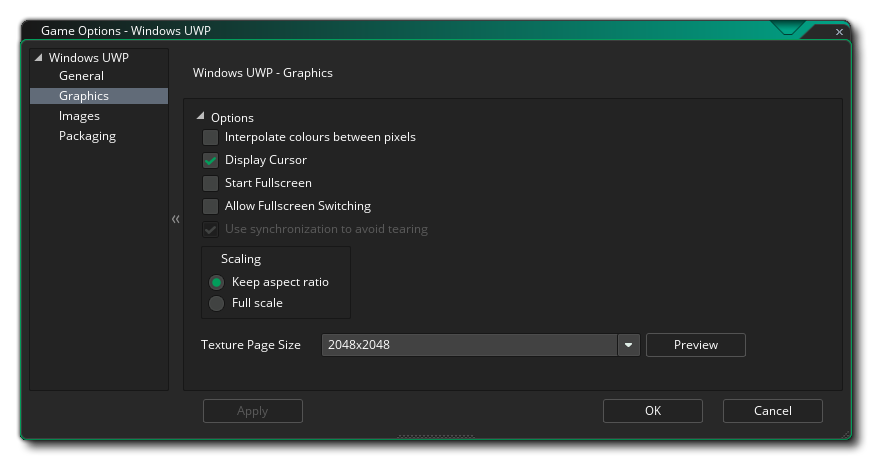
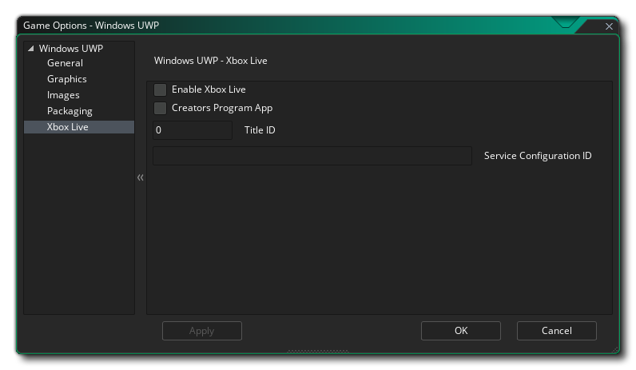

Esta sección describe las diferentes opciones disponibles para usted que controlan cómo se compilará su proyecto de juego UWP (Plataforma Universal de Windows). Las diferentes secciones son:
La sección general de las opciones de UWP es donde puede establecer la información del producto:
- Mostrar nombre: especifica el nombre descriptivo de la aplicación que se muestra a los usuarios (esta cadena es localizable).
- Nombre del paquete: este es el nombre del paquete que ha creado y debe coincidir con el utilizado para la clave de Desarrollador que ha creado para el juego (consulte la sección sobre Empaquetado a continuación).
- Nombre para mostrar del paquete: este es el "nombre corto" del paquete y debería ser el mismo que el nombre para mostrar.
- Nombre para mostrar del editor: este es el nombre de su empresa o la persona a la que desea asociar como editor de juegos.
- Versión: el número de versión de tu juego.
Después de configurarlo, puede seleccionar las diferentes orientaciones en las que se puede ejecutar su juego para la mejor experiencia de usuario. Las opciones disponibles son:
- Paisaje
- Retrato
- Paisaje volteado
- Retrato invertido
De manera predeterminada, se seleccionarán todos estos y deberá deseleccionar aquellos que no necesite.
Después de establecer las opciones de orientación, puede señalar los diferentes Permisos que necesitará su aplicación UWP a partir de las siguientes opciones:
- Habilitar permiso de Internet: Indica que el juego tiene acceso a internet. Esto está desactivada por defecto.
- Habilitar permiso de micrófono: Indica que el juego tiene acceso al micrófono del dispositivo. Esto está desactivada por defecto.
- Habilitar IAP Sandbox: Indica que el juego usa Sandboxed In App Purchases. Esto está desactivada por defecto.
Finalmente, tiene dos opciones para configurar las versiones de plataforma Target y Minimum Windows. En general, no querrá tocarlos y debería dejarlos en sus valores predeterminados, pero si tiene problemas de compilación (específicamente, si no puede instalar el SDK de Windows de manera predeterminada, deberá cambiar estos a lo que ha instalado), entonces puede que desee establecer estos a otros valores. Si no está seguro de qué valores establecer, cree un nuevo proyecto de UWP en Visual Studio y observe en qué establece los valores.

Las opciones de gráficos son las que debes configurar para determinar cómo usará tu juego la tarjeta gráfica de tu dispositivo UWP objetivo. Las siguientes opciones están incluidas para que usted las modifique:
- Interpolar colores entre píxeles: activa la interpolación, que básicamente "suaviza" los píxeles. Para gráficos nítidos de píxeles, debería estar apagado, pero si tiene buenas mezclas alfa y gráficos con bordes suavizados, es mejor dejarlos encendidos. Esto está desactivado por defecto.
- Mostrar cursor: cuando esta opción está habilitada, el cursor OS predeterminado se mostrará en su juego. Si esto está desactivado, mientras el mouse está sobre la ventana del juego, no habrá un cursor visible a menos que hayas creado uno como parte del proyecto del juego (esto está activado por defecto).
- Iniciar pantalla completa: cuando está habilitado, el juego comenzará en modo pantalla completa. Tenga en cuenta que esto puede no tener un efecto visible en otra cosa que no sea un dispositivo de escritorio con Windows 10.
- Permitir el cambio a pantalla completa: cuando está habilitado, puede cambiar el juego entre modos de pantalla completa y ventana usando los atajos apropiados. Tenga en cuenta que esto puede no tener un efecto visible en otra cosa que no sea un dispositivo de escritorio con Windows 10.
- Use la sincronización para evitar el desgarro: esta opción existe pero se ha desactivado debido a que la plataforma UWP requiere que la sincronización v esté activada actualmente.
- Escalado: Aquí puede elegir mantener la relación de aspecto (por lo que una habitación de 4: 3 tendrá "letra de recuadro" en 16: 9) o una escala completa (estirando la imagen para que se ajuste a la pantalla completa).
¡ADVERTENCIA! Al desactivar la superficie de la aplicación se desactivarán todas las opciones de escala establecidas en las Opciones del juego UWP hasta que se vuelva a encender. Ver la superficie de aplicación para más detalles.Finalmente, existe la opción de establecer el tamaño de la Página de Textura. El tamaño predeterminado (y el más compatible) es 2048x2048, pero puede elegir entre 256x256 hasta la increíble cantidad de 8192x8192. También hay un botón marcado Ver que generará las páginas de textura para esta plataforma y luego abrirá una ventana para que pueda ver cómo se ven. Esto puede ser muy útil si desea ver cómo se estructuran las páginas de textura y para evitar que las páginas de textura sean más grandes (o más pequeñas) de lo necesario.
NOTA: tenga en cuenta que cuanto mayor sea el tamaño de la página de textura, menos compatible será su juego en dispositivos UWP con especificaciones más bajas.
La primera parte de la sección Imágenes es para definir el juego Logo. Este es esencialmente el ícono que su juego usará dentro del ecosistema UWP, y vale la pena señalar que estas imágenes pueden ser transparentes. .png archivos, en cuyo caso se dibujarán sobre el Color de fondo especificado en esta sección. Este color de fondo también se aplica al color del botón en los cuadros de diálogo propiedad de la aplicación y a la página Descripción de la aplicación en la Tienda en dispositivos.
Después de configurar el logotipo, puede establecer la pantalla de presentación para el juego. Esta es la pantalla que se mostrará cuando inicies el juego, y no puede tener más de 620 x 300 píxeles y, al igual que el logotipo, puede ser transparente. .png archivo, en cuyo caso se usará el color de fondo que elijas.
Finalmente, tiene la opción de establecer los distintos mosaicos que utilizará su juego en los diferentes dispositivos en los que se puede ejecutar UWP. Puede establecer lo siguiente:
- La imagen de mosaico pequeño es la imagen de logotipo que aparece junto al nombre de la aplicación en la barra de búsqueda y otras áreas de la interfaz de usuario. Debe ser de 44 x 44 píxeles.
- La imagen del mosaico mediano debe ser una imagen de 71x71 píxeles.
- La siguiente imagen del mosaico es el mosaico del logotipo de la tienda y debe tener 50 x 50 píxeles.
- El mosaico de imagen ancha es el que aparece cuando el mosaico está en su formato ancho y debe tener 310 x 150 píxeles. Si no se proporciona esta imagen, el mosaico solo se puede mostrar en formato cuadrado y no puede aceptar notificaciones basadas en amplios tipos de plantillas. Como el usuario puede decidir qué formato usará el mosaico, se recomienda que incluya un mosaico de imagen amplia. También tenga en cuenta que si se proporciona un mosaico de imagen ancha, el mosaico puede aparecer inicialmente en su formato ancho.
- El mosaico de imagen grande es el formato grande de mosaico en vivo y debe tener 310 x 310 píxeles. Tenga en cuenta que esto solo se usará en el sistema operativo de escritorio.
Vale la pena señalar que GameMaker Studio 2 tiene una herramienta Project Image Generator que se puede utilizar para crear automáticamente todas las imágenes necesarias para todas las plataformas de destino diferentes en las que se está compilando su juego. Si usa esta herramienta, debe revisar las imágenes creadas para asegurarse de que son lo que necesita.
GameMaker Studio 2 proporciona una clave de desarrollador predeterminada para el desarrollo de WindowsUWP, pero se recomienda generar la suya propia y señalarla aquí. Para hacer esto, cree un proyecto vacío en Visual Studio Express y luego almacene en un lugar seguro una copia de lo generado automáticamente. *.pfx archivo que habrá incluido en el proyecto vacío (esta es la clave del desarrollador). Deberías entonces vincular eso *.pfx archivo aquí.
Después de vincular al archivo, debe hacer clic en el botón asociado en Instalar y siga las instrucciones del símbolo del sistema que se abrirá. Si no haces esto, entonces usar los botones Ejecutar / Depurar (o presionar F5) fallará y tu juego no podrá probarse en la plataforma UWP (sin embargo, si usas Create Executable, el proceso de instalación de certificación se iniciará automáticamente si *.pfx aún no se ha registrado).
NOTA: cuando se trata de cargar su aplicación a la tienda, deberá obtener la correcta *.pfx por tu título Esto se hace a través de la asociación de su aplicación con la Tienda Windows en Visual Studio que hace que Visual Studio genere un nuevo *.pfx específicamente para la aplicación. También vale la pena señalar que puede asociar cualquier aplicación con Windows Store en Visual Studio, lo que significa que puede asociar un proyecto en blanco con la aplicación Windows Store y simplemente copiar el generado pfx a un lugar seguro que luego se puede usar dentro de UWP Game Options. Puede encontrar instrucciones sobre cómo se hace esto en la base de conocimientos de YoYo Games.

La sección de Xbox Live de UWP Game Options es donde puedes activar tu proyecto UWP para utilizarlo en la consola Xbox One. Activar el proyecto para Xbox aquí le permite hacer lo siguiente cuando el proyecto se ejecuta en una Xbox One:
- Iniciar sesión en Xbox Live desde la aplicación
- Use la identidad del usuario de Xbox Live de alguna manera en el proyecto (por ejemplo, mostrando el gamertag o la imagen del jugador)
Sin embargo, antes de poder hacer estas cosas, deberá asegurarse de haber hecho clic en la casilla Habilitar Xbox Live, y si usted es parte del Programa de Microsoft Creators, también debe verificar la opción de la Aplicación del Programa de Creadores. Si usted es parte del Programa de Creadores, necesitará agregar la Identificación del Título y la Identificación de la Configuración del Servicio (se puede encontrar más información sobre esto en Microsoft ).
Tenga en cuenta que actualmente para probar la funcionalidad de Xbox Live en su proyecto, necesitará usar Crear ejecutable en lugar de Ejecutar, ya que la salida UWP Xbox necesita usar el certificado de firma de la Tienda Windows que proporcione como parte de la información de empaquetado (ver arriba) en lugar de el temporal proporcionado con GameMaker Studio 2, que es el que se usará cuando aciertes a ejecutar.
Una vez que haya habilitado XBox Live, puede continuar y usar las funciones de XBox Live en su proyecto.